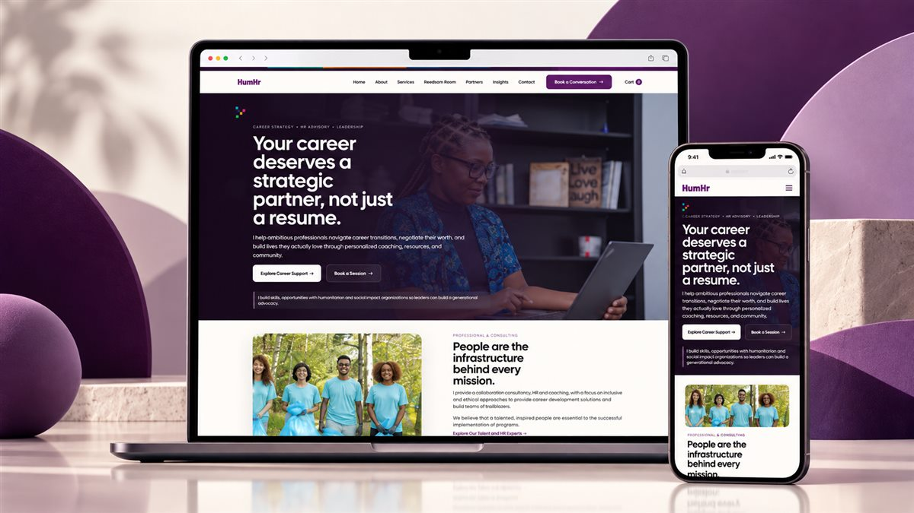
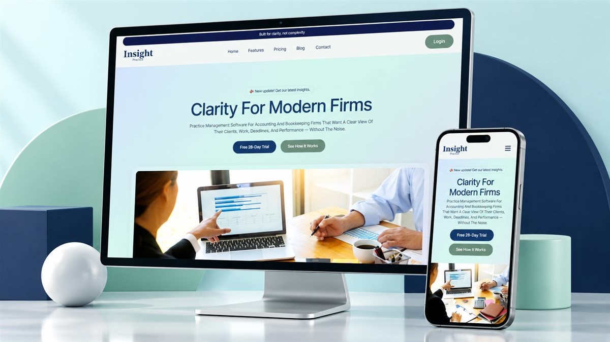
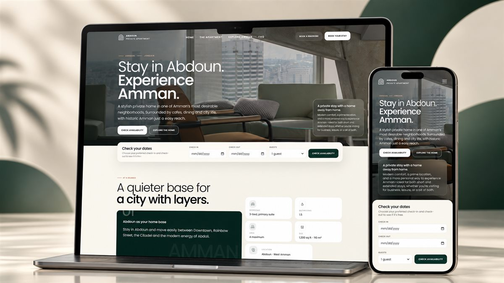
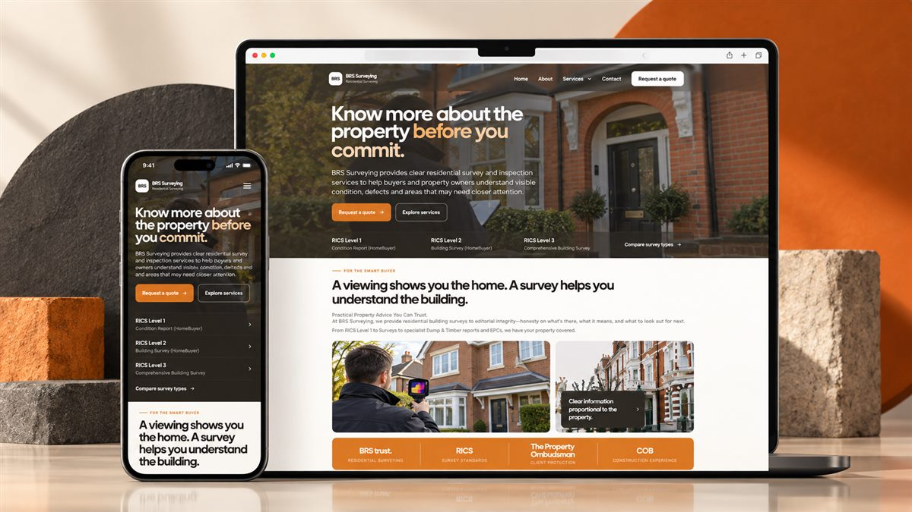
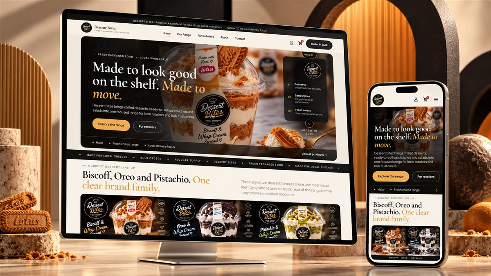
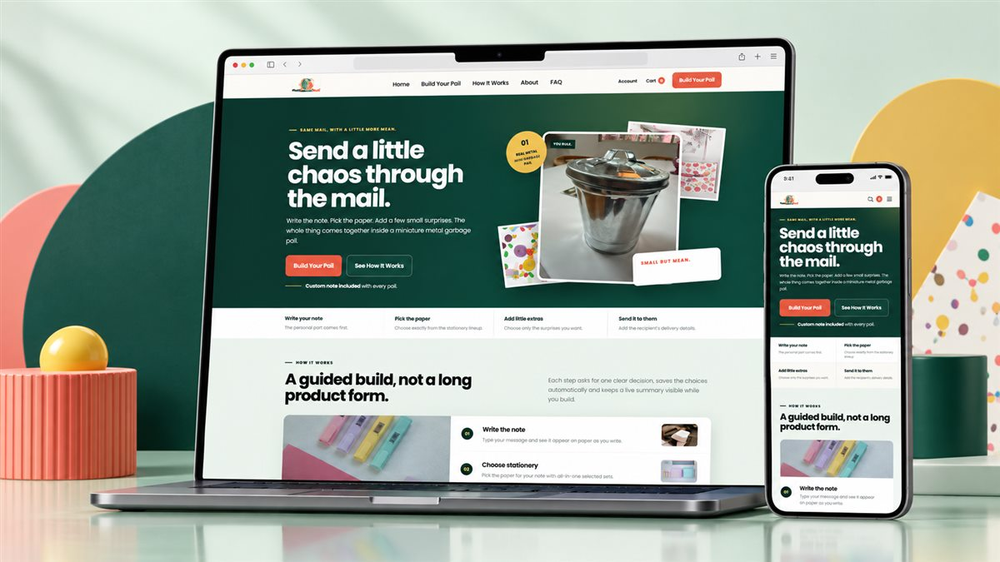
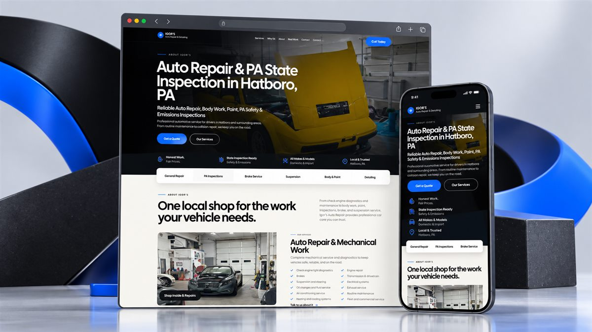
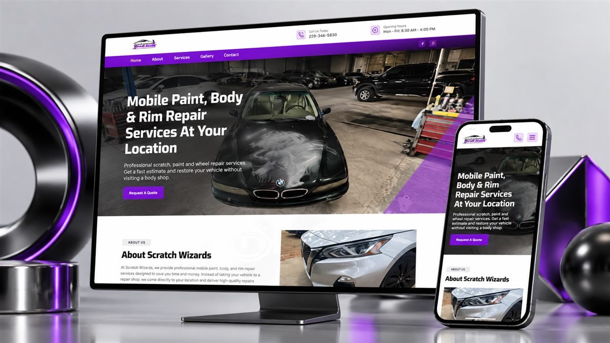
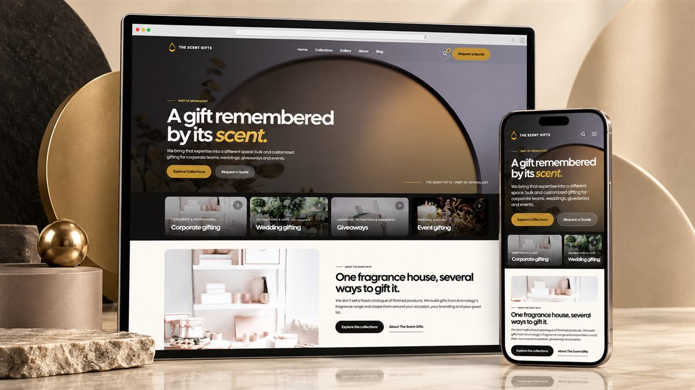

01 · Leadership & professional speaking
Rennie Curran
A content-rich WordPress platform for a keynote speaker, author and leadership coach.
Open case studyCase studies
Four detailed project stories and ten additional website showcases. Explore work across professional services, e-commerce, automotive, healthcare and hospitality.
A content-rich WordPress platform for a keynote speaker, author and leadership coach.
Open case study
A sharper, trust-led service experience for a mobile auto glass business.
Open case study
A modern clinic website that makes a multi-service treatment offer easier to navigate.
Open case study
A visual sales experience for custom logo cookies and corporate gifting.
Open case studyMore work
Explore the supplied desktop and mobile presentations across service businesses, retail, hospitality and software.










Start a conversation
Share the current site, the business goal and what is getting in the way. I’ll reply with a practical next step.
Tell me about the project